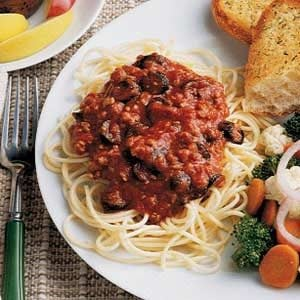

Italian Spaghetti

Description
Quick Italian Spaghetti Recipe photo by Taste of Home
Ingredients
- 1/2 pound ground beef
- 3/4 cup thinly sliced green onions
- 3 cans (8 ounces each) tomato sauce
- 2 teaspoons sugar
- 1 teaspoon Worcestershire sauce
- 1/2 teaspoon salt
- 1/8 teaspoon pepper
- 1 can (2-1/4 ounces) sliced ripe olives, drained
- Cooked spaghetti
- Grated Parmesan cheese
- Bacon bits, optional
Steps
- In a large skillet, cook beef and onions over medium heat until meat is no longer pink; drain. Add the tomato sauce, sugar, Worcestershire sauce, salt and pepper. Bring to a boil. Reduce heat; cover and simmer for 10 minutes.
- Add olives; simmer 5 minutes longer. Spoon over spaghetti; sprinkle with cheese and bacon bits if desired.